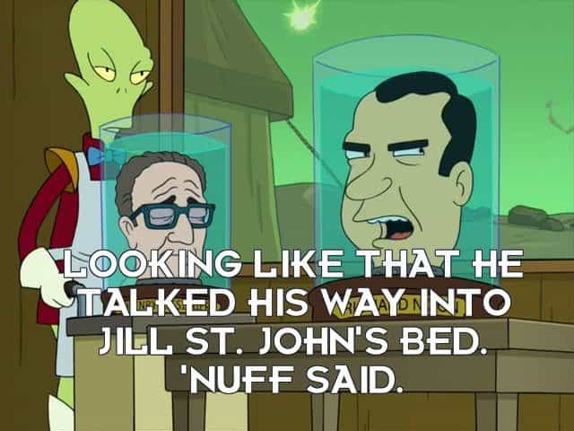
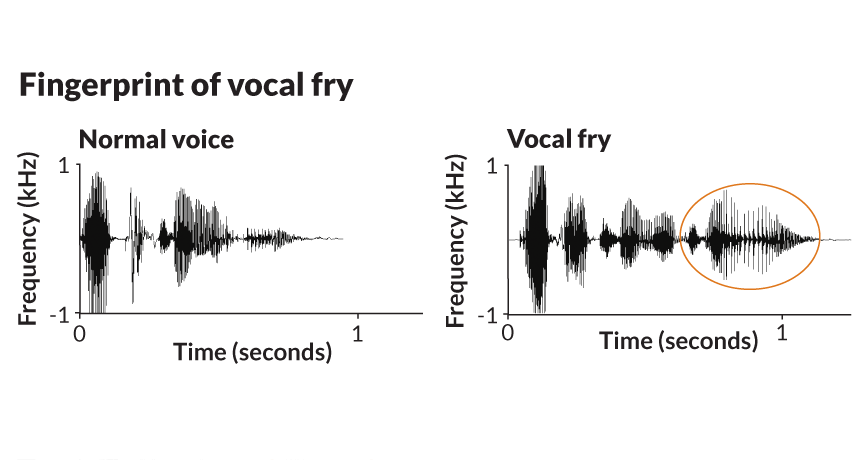
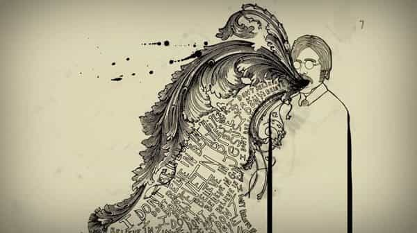

We’ve all heard the term “charisma” many times in our lives—the animal magnetism that makes somebody attractive to complete strangers, that twinkle in the eye that makes somebody seem utterly likeable and/or relatable, or alternatively the radiation of power and gravitas that makes people fall to their knees in awe. But do you have any idea of how to get it?
Most people would argue that you can’t “get” charisma; it’s something that you’re either born with or not born with, and those without have to be content to live the rest of their lives as the equivalent of a fart in church, never commanding an ounce of respect from anybody and being entirely ineffectual.
Wrong.
I used to think this way myself, but if you know me, you’ll know that I believe the vast majority of problems you have can be fixed with enough concerted effort—very few of your problems are etched in stone. Perhaps it is a side effect of working as a personal trainer and having to trawl for clients, but having to put in efforts to be a salesman has led to me to researching ways to increase my charisma. And, if my early adoption is any indication, it does work, and will only continue to work with practice.
What is Charisma?
Charisma is defined by Olivia Cabane in The Charisma Myth as various verbal and non-verbal cues that radiate three core aspects: power, presence, and warmth (and before anybody starts whining about the fact that I dare to occasionally take advice from a woman, I will point out that said woman advises numerous corporate CEOs and politicians, so I’ll take her advice over, say, the clods that I profile on my “Pick Up Assholes” Youtube show).
The emphasis in that paragraph is nonverbal cues: bear in mind that the majority of human evolution was done in times without verbal language at all, and thus your body language will project those three things far more than any words ever could.
Also bear in mind that being charismatic does not necessarily mean you have to be the stereotypical loud, boisterous, swaggering “Chad”. One can certainly have a quiet and dignified charisma—think Winston Churchill or Henry Kissinger—divisiveness of their politics aside, they certainly had their way with words—and those two examples also indicate that you certainly don’t need to be physically attractive to be charismatic.

And finally, realize that you don’t need to change your personality to be charismatic—think of it as learning certain skills or techniques, and then picking and choosing those techniques to best suit your personality. There are so many techniques that I have learned from various sources that it will take a few future articles, but there are three incredibly simple techniques that you can implement right now, without any practice or preparation, to increase your charisma right now.
1. Lower the intonation of your voice at the end of sentences
It’s practically a cliche at this point to mock the Valley Girl-ish “uptalk” and “vocal fry”, but it’s only a cliche because it’s that important: Whether you are a man or woman, but especially a man, stop doing that shit!
It’s not commanding, it doesn’t show you to have a strong presence, and the sheer cringiness of this type of vocalization means you won’t be conveying much warmth either. Nobody will take you seriously regardless of your sex, but the effeminacy of uptalk and vocal fry makes it doubly so for men. So cut it out.
2. Slow down your speech; reduce how often and quickly you nod and gesture
Think of somebody likes James Bond, or a regal and dignified king: does he twitch his head and speak rapidly, and spastically flap his arms? No, he’s slow, smooth, and deliberate—he has poise. In contrast, a nervous person who is trying desperately to impress or assuage somebody spews forth a stream of verbiage, and is constantly nodding and gesturing to confirm to the dominant person in the conversation that he is in agreement.
The analogy I’m going to use may sound a bit inane but hear me out: do you remember an old Looney Tunes short titled Tree for Two? I just linked to it: go watch it, and take note of how the little dog acts. Go out of your way to not be like him, and that’s a rough idea of how poise works.
3. Constructive Pauses
This is related to the second one but, again, don’t spew forth a torrent of words. Speak slowly and intelligently.

Beyond those three, there are a wide variety of charismatic techniques that all seem to revolve around “Tricking” your mind to get into a state of power, warmth, or presence. As a side note, while doing research I thought that this might be why politicians and actors tend to be sociopaths or… just abject miserable human beings: because they are mental “blank slates” that they can “paint” emotions upon. Similarly, this might explain why cult leaders can get their followers—because they genuinely delude themselves into believing their own bullshit.
But perhaps that will be a discussion for another day. Do the three techniques above, and start on your charismatic journey.
Read More: Red Pill Wisdom From Patrice O’Neal